<!doctype html>
<html>
<head>
	<meta charset="utf-8">
	<title>Te Pukenga footer Demo</title>
	<!--link rel="stylesheet" href="/umisc/font-awesome/css/font-awesome.css"-->
</head>
<body>
<footer class="tepuke-footer">
<!-- Te Pukenga footer  -->
<style>
/* load font for one little chevron '>' ... */
@font-face {
	  font-family: 'FontAwesome';
	  src: url('/umisc/font-awesome/fonts/fontawesome-webfont.woff2?v=4.7.0') format('woff2');
	  font-weight: normal;
	  font-style: normal;
	}
	.fa {
	  display: inline-block;
	  font: normal normal normal 14px/1 FontAwesome;
	  font-size: inherit;
	  text-rendering: auto;
	  -webkit-font-smoothing: antialiased;
	  -moz-osx-font-smoothing: grayscale;
	}	
	.fa-angle-right:before {
  	content: "\f105";
}
/* done with the font, now on to html tags css */	
.tepukenga {
	 background-color:#000;
	 color:#fff;
	 font-family:'Montserrat', sans-serif;
	 font-size:16px;
}
.tepukenga img {
	 image-rendering:-webkit-optimize-contrast;
}
.tepukenga p {
	 margin-top:0;
	 margin-bottom: 0;
	 color: #fff;
	 font-family: 'Montserrat', sans-serif;
	 font-size: 16px;
}
.tepukenga a {
	 color:#fff;
	 font-family: 'Montserrat', sans-serif;
	 font-size: 15px;
}
.tepukenga a:hover {
	 text-decoration:underline;
}
.tepukenga-upper {
	 border-bottom:3px solid #216e31;
	 padding-bottom:20px;
	 padding-top:20px;
}
.tepukenga-upper a {
	 text-decoration:underline;
}
.tepukenga-upper-wrapper {
	 align-items:center;
	 display:flex;
	 justify-content:flex-start;
	 margin: 0 auto;
	 max-width: 1280px !important;
	 padding: 0 40px;
}
@media screen and (max-width: 700px) {
 .tepukenga-upper-wrapper {
	  flex-direction:column;
	  gap:20px;
 }
 .tepukenga-upper-wrapper p {
	  text-align:center;
	  color: #fff;
	  font-family: 'Montserrat', sans-serif;
	  font-size: 16px;
 }
 .tepukenga-upper-wrapper a {
	  display:block;
	  color: #fff;
	  font-family: 'Montserrat', sans-serif;
	  font-size: 15px;
 }
}
.tepukenga-logo {
	 display:block;
}
.tepukenga-logo img {
	 max-width:200px;
}
@media screen and (min-width: 701px) {
 .tepukenga-upper-info {
	  border-left:2px solid #888;
	  margin-left:20px;
	  padding-left:20px;
	  text-align: left;
 }
}
.tepukenga-lower {
	 align-items:center;
	 display:flex;
	 justify-content:space-between;
	 padding-bottom:20px;
	 padding-top:20px;
}
@media screen and (max-width: 700px) {
 .tepukenga-lower {
	  flex-direction:column;
	  gap:40px;
 }
}
.tepukenga-lower>div {
	 align-items:center;
	 display:flex;
	 gap:20px;
	 justify-content:flex-start;
}
@media screen and (max-width: 700px) {
 .tepukenga-lower>div {
	  flex-direction:column;
 }
}
.tepukenga-lower.lowest {
	 font-size:15px;
	 padding-top:0;
	 padding-bottom: 0px;
}
@media screen and (max-width: 700px) {
 .tepukenga-lower.lowest {
	  gap:20px;
	  margin-top:20px;
 }
 .tepukenga-lower.lowest p {
	  text-align:center;
 }
}
 ul.tepukenga-lower {
	 display:flex;
	 gap:10px;
	 list-style-type:none;
	 margin-top: 0;
	 margin-bottom: 0;
	 padding-left:0;
	 padding-top: 0px;
	 padding-bottom: 0px;
}
@media screen and (max-width: 700px) {
 .tepukenga-lower ul {
	  flex-wrap:wrap;
	  justify-content:center;
 }
}
ul.tepukenga-lower  a {
	 text-decoration:underline;
}
li.tepukenga-lower  {
	 padding:0 !important;
	 color: #fff;
	 font-family: 'Montserrat', sans-serif;
	 font-size: 15px;
	 background: #000;
	
}
.tepukenga-lower-tagline {
	 font-weight:600;
}
.tepukenga-btn {
	 background-color:#216e31;
	 padding:10px 15px;
	 text-decoration: none;
}

.tepukenga-btn:after {
	/* custom subsidiary chevron settings if needed.
	content:"\e613";
	font-family: 'icomoon';
	font-size:0.8rem;
	*/
	 content: "\00a0\f105";
	 font-family: FontAwesome;
	 font-size:1.3rem;
	 display:inline-block;
	 line-height:1;
	 margin-left:5px;
}
.tepukenga-logo-nzgovt {
	 max-width:250px;
}
@media screen and (max-width: 700px) {
 .tepukenga-logo-nzgovt-desktop {
	  display:none;
 }
}
@media screen and (min-width: 701px) {
 .tepukenga-logo-nzgovt-mobile {
	  display:none;
 }
}
.tepukenga-wrapper {
	  margin: 0 auto;
	  max-width: 1280px !important;
	  padding: 0 40px;
}
/* Subsidiary CSS if needed. */
.tepuke-footer {
	background: #000;
	width: 100%;
	max-width: 1440px;
	margin: 0px auto 0;
	padding-bottom: 20px;
}	
</style>
	<div class="tepukenga">
    <div class="tepukenga-upper">
      <div class="tepukenga-upper-wrapper">
        <p><a href="https://xn--tepkenga-szb.ac.nz/" rel="noreferrer" target="_blank" title="Open the Te Pūkenga website in a new tab. " class="tepukenga-logo"></a></p>
        <p class="tepukenga-upper-info"><subsidiary>Unitec</subsidiary> is part of Te Pūkenga - New Zealand Institute of Skills and Technology
          <a href="https://www.unitec.ac.nz/about-us/te-pukenga" title="Learn More">Learn More</a>
        </p>
      </div>
    </div>
    <div class="tepukenga-wrapper">
      <div class="tepukenga-lower">
        <div>
          
            <p class="tepukenga-lower-tagline" id="tepukenga-tagline">Learn with purpose</p>
            <p><a href="https://tepūkenga.ac.nz/programme/search" target="_blank" class="tepukenga-btn" title="Explore Te Pūkenga" id="ExploreTePukenga">Explore Te Pūkenga</a></p>
          
        </div>
        <p class="tepukenga-logo-nzgovt-desktop"><a href="https://www.govt.nz/" rel="noreferrer" target="_blank" title="Open the New Zealand Government website in a new tab. "></a></p>
      </div>
      <div class="tepukenga-lower lowest">
        <ul class="tepukenga-lower">
          
              
                <li class="tepukenga-lower"><a target="_blank" href="https://xn--tepkenga-szb.ac.nz/about-us/" title="About Te Pūkenga">About Te Pūkenga</a></li>
              	
                <li class="tepukenga-lower"><a target="_blank" href="https://www.unitec.ac.nz/privacy-policy" title="Privacy Policy">Privacy Policy</a></li>
			    <optional-terms>           
					<li class="tepukenga-lower"><a target="_blank" href="" title="Website Terms of Use">Website Terms of Use</a></li>
				</optional-terms>
              
          
        </ul>
        <p class="tepukenga-logo-nzgovt-mobile"><a href="https://www.govt.nz/" rel="noreferrer" target="_blank" title="Open the New Zealand Government website in a new tab. "></a></p>
        <p>Copyright © <year>2022</year> <subsidiary>Unitec New Zealand Limited (Unitec)</subsidiary></p>
      </div>
    </div>
  </div>
<!-- end of Te Pukenga footer -->
</footer>
</body>
</html>